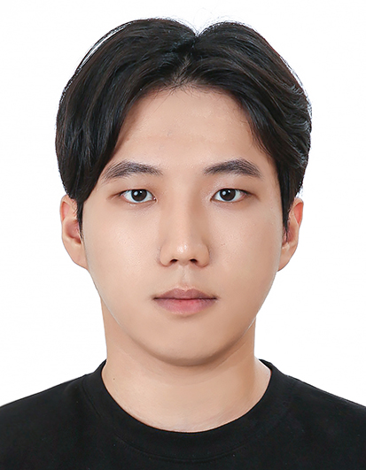

Seoul National University
Academic focus in robotics, machine learning, reinforcement learning, control, signal processing, probability, linear algebra, and computing for maritime engineering applications.
Robotics | AI | Naval Architecture
I study Naval Architecture and Ocean Engineering at Seoul National University with an interdisciplinary major in Artificial Intelligence. My work focuses on robot learning, motion planning, and trajectory optimization for mobile robots and manipulators in shipbuilding environments.

About
My long-term goal is to develop planning and learning methods that help mobile robots and mobile manipulators operate robustly in unstructured shipyard conditions, including narrow passages, stiffener traversal, localization uncertainty, and manipulation tasks.
I am especially interested in combining model-based planning, trajectory optimization, imitation learning, and reinforcement learning to bridge precise dynamics with practical field autonomy.
CV
Academic focus in robotics, machine learning, reinforcement learning, control, signal processing, probability, linear algebra, and computing for maritime engineering applications.
Developed MATLAB visualization and simulation tools for a planar manipulator, implemented control-affine dynamics, and contributed to a faster C++ trajectory-optimization solver using CasADi symbolic differentiation.
Projects
Built a MATLAB planner for a 2-DoF planar manipulator using an AGHF-inspired trajectory optimization pipeline, inverse kinematics, pseudospectral discretization, and Simulink tracking with feedforward torque plus PD feedback.
Contributed to a ROS2/Gazebo navigation project for a Unitree Go1 robot by integrating localization, map-based A* planning, obstacle inflation, launch files, and MPPI path tracking topics.
Courses
Contact